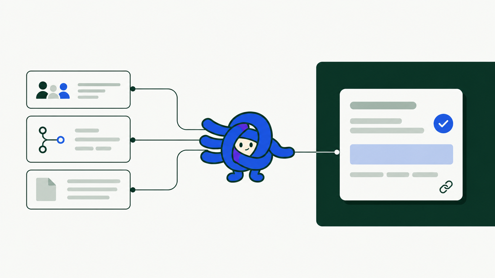
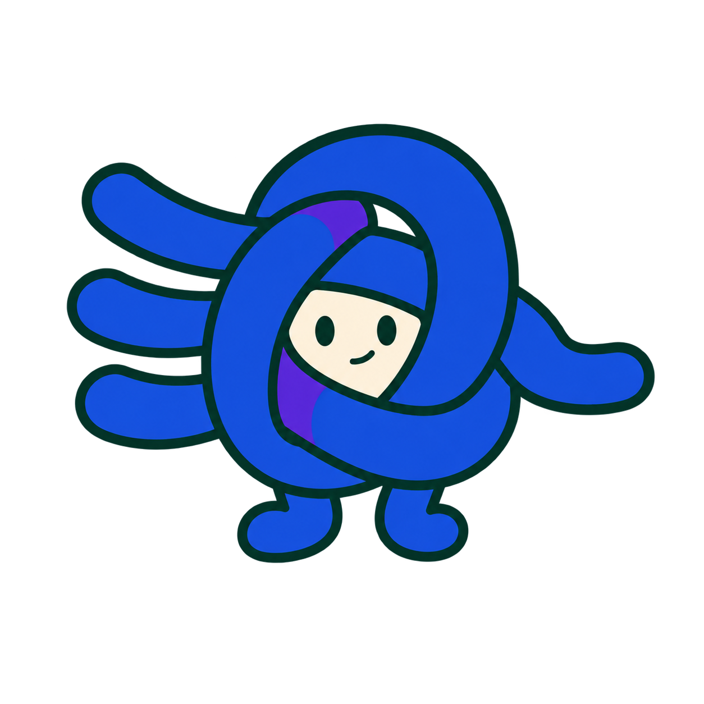
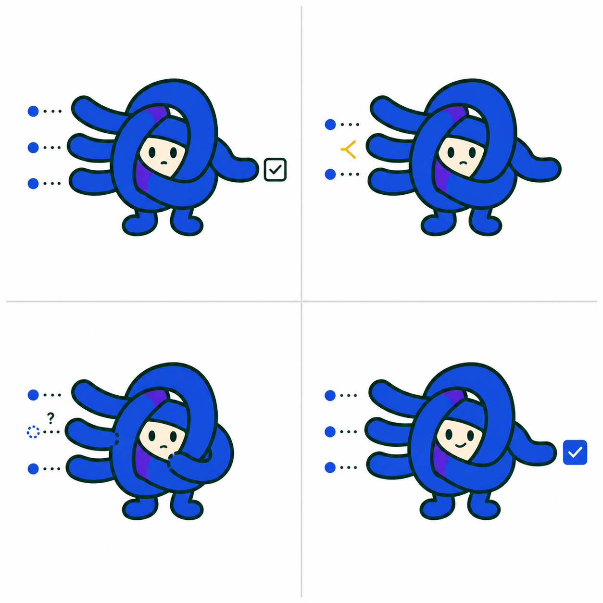

Assinaturas
Sempre três entradas, um laço aberto e uma saída.
Relay conecta contexto espalhado e o transforma em decisões, riscos e ações verificáveis — sem perder a fonte.

Sempre três entradas, um laço aberto e uma saída.

Guia de rastreabilidade: simpático, calmo e presente apenas quando ajuda.

“Ainda falta fonte para confirmar isso.”
Fato primeiro. Lastro visível. Incerteza honesta. Próximo passo claro.
Manrope para clareza humana.
fonte → evidência → interpretação → incerteza → ação humana → registro
Se uma decisão visual não reforça essa cadeia, ela não pertence à Relay.